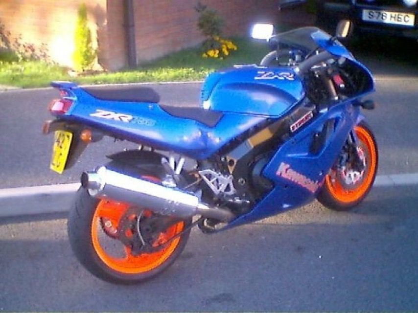
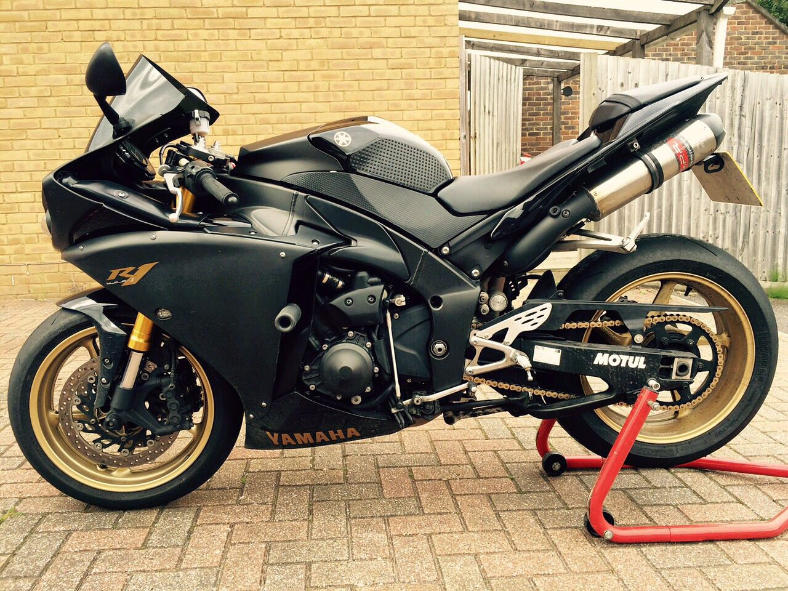
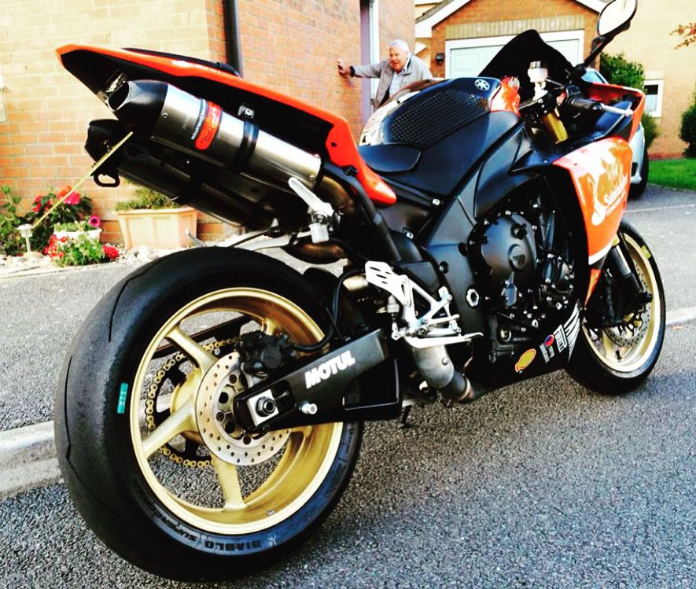
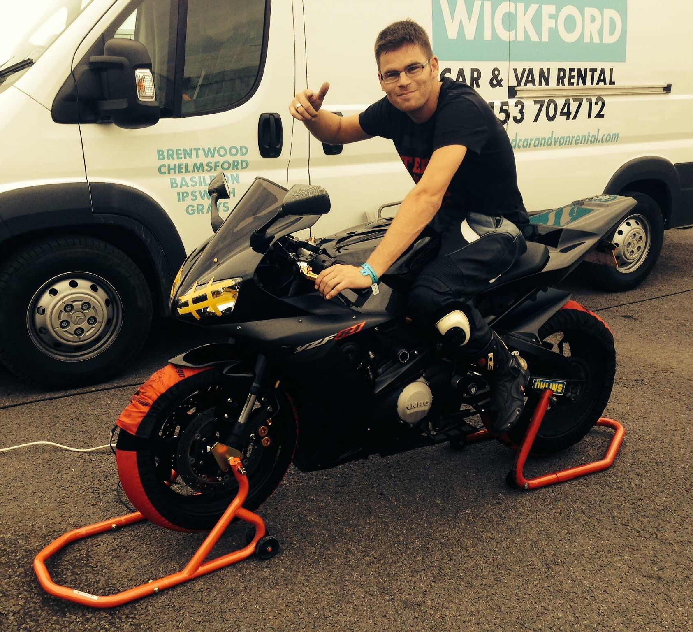
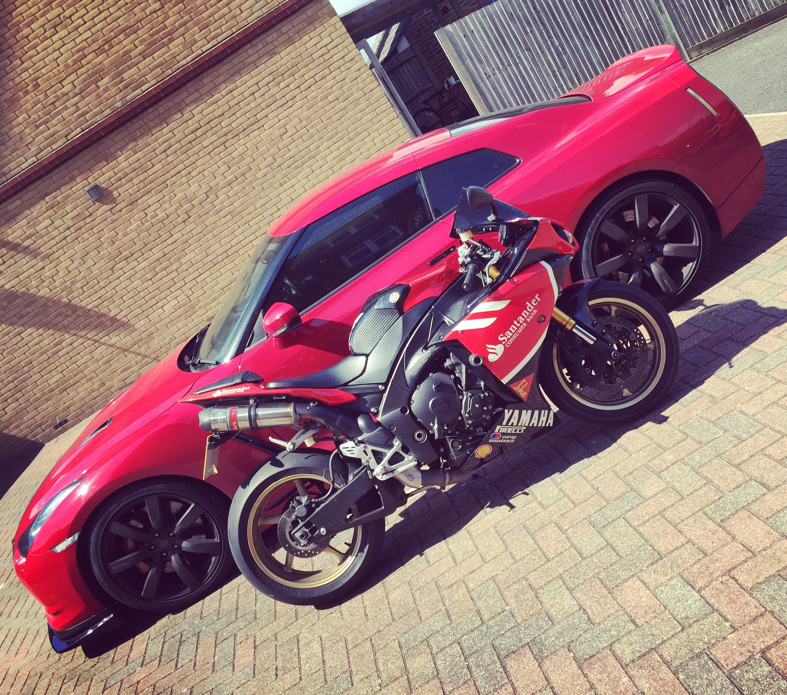
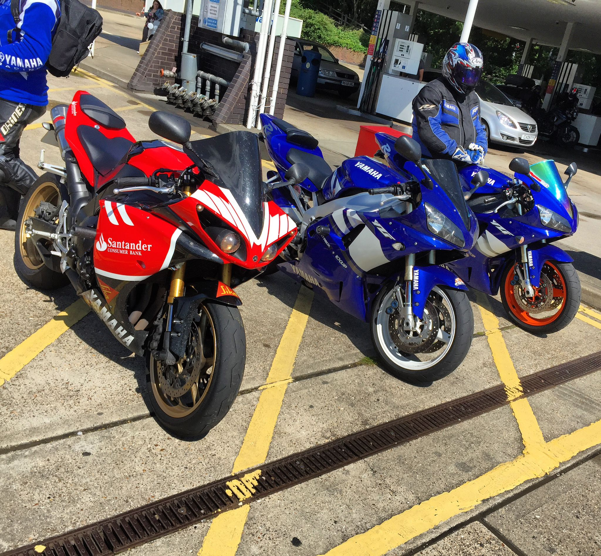
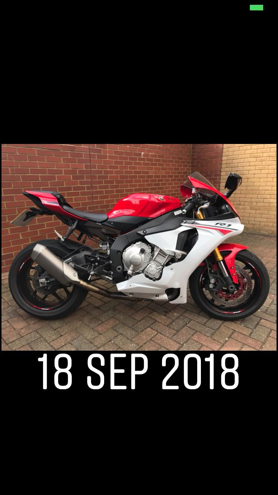

🏍️ The Garage
Two bikes. Two personalities. One addiction.
Two bikes. Two personalities. One addiction.
The S1000RR is pure precision engineering. BMW took everything they knew about making things go fast and poured it into an inline-four that screams to the redline. It's the kind of bike that makes you a better rider — or humbles you trying. Razor-sharp on turn-in, relentless on the straights, and packed with enough electronics to keep things (mostly) civilised.
Whether it's a trackday at Brands Hatch or a Sunday blast through the Kent lanes, the RR delivers that addictive cocktail of fear and euphoria that keeps you coming back.
KTM call it "The Beast" and that's not marketing fluff — it's a genuine warning label. The 1290 Super Duke is a V-twin muscle bike with the manners of a cage fighter. Massive torque from idle, a chassis that begs to be thrown into corners, and a presence on the road that makes everything else feel apologetic.
It's the everyday hooligan. Commuting? Entertaining. Country roads? Devastating. Traffic? That V-twin rumble makes even the boring bits feel good. It's the bike that makes you take the long way home every single time.

The one that started everything. A Kawasaki ZXR 400 in blue with orange wheels — peak 90s sportbike energy. Four-cylinder screamer that taught you how to ride properly, rev-happy and eager to please. Every biker remembers their first, and this one set the tone for everything that followed.



The black and gold R1 — fully track-prepped with Öhlins suspension, Motul on the swingarm, and gold wheels that meant business. This thing lived on paddock stands more than it did on the road. A proper trackday weapon.


The red Santander race livery R1 — loud, proud, and impossible to miss. Yamaha Racing stickers, Dainese leathers, fuel stops with mates, and that unmistakable crossplane crank rumble echoing off petrol station canopies. This was the one for the group rides.

The newer-gen R1 in red and white — picked up September 2018. Öhlins gold forks, crossplane crank, and that aggressive modern R1 styling. A serious step up from the earlier models. Three R1s deep and still not bored of the platform. That says something.
Because one bike can't do everything — and why would you want it to? The S1000RR is for those days when you want surgical precision and to chase lap times. The Super Duke is for when you want raw character, torque, and to feel every bit of the road beneath you.
One's a scalpel. The other's a sledgehammer. Both are addictive. Both get ridden hard. The perfect two-bike garage.